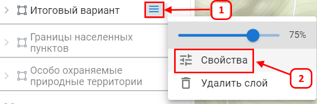
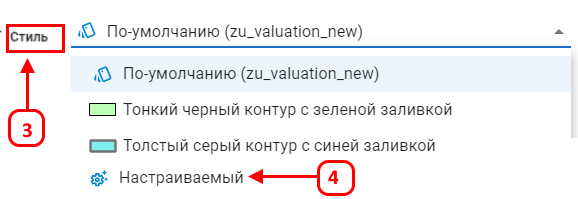
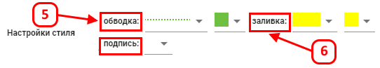
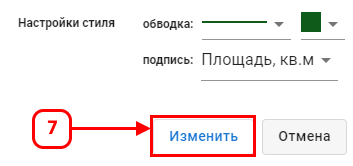
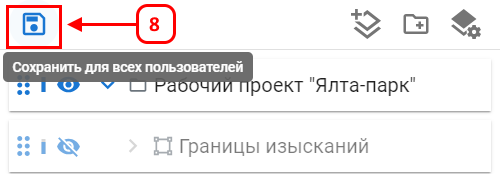

Стиль для слоя
Настройка стиля для слоя определяет внешний вид объектов на карте посредством измениния цвета, толщины линий, заливки и добавление подписей. Что позводяет сделать карту более информативной и удобной для восприятия.
Изменение стиля слоя:
- Откройте меню cвойства слоя (1).

- В разделе Стиль (3) выберите нужный стиль из выпадающего списка (например, "Толстый серый контур с синей заливкой").

- При необходимости выберите настраиваемый (4) для более детальной настройки стиля.
- В блоке Настраиваемый задайте параметры:
- Обводка (5): Нажмите на цветной квадрат для выбора цвета и установите тип линии.
- Заливка (6): Нажмите на цветной квадрат для выбора цвета и установите тип заливки.

- Нажмите (7) для применения настроек стиля.

- Нажмите (8), чтобы сохранить внесенные изменения слоя в проекте.

После изменения стиля выбранный слой будет отображаться с указанными параметрами визуализации.